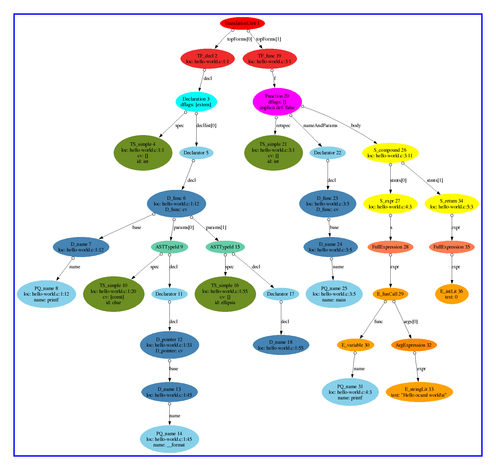

Olmar : Process C++ Programs in Ocaml
Olmar
connects Elsa, the Elkhound based C/C++ parser and type checker, with Ocaml. More precisely,
the Olmar extension can
translate Elsa's internal abstract syntax tree
into a value of an Ocaml variant type. This value can then be
further processed with a pure Ocaml program. I prefer to have
stand alone Ocaml programs. Therefore I let Elsa
marshal the abstract syntax tree as an Ocaml value to disk.
However, it is also possible to link the Ocaml code into the Elsa
executable.
News
- 2 May 2007
-
- updated to the elsa stack svn repository, version May 2nd 2006
(svn versions: elsa-stack: 9 smbase: 491 ast: 282 elkhound: 1045
elsa: 2476)
- added node types Scope, TemplateInfo, InheritedTemplateParams
and a few additional fields in other nodes
- some fields changed their type (for instance case labels changed
from int to int32)
- check_oast: new consistency checks of generated oast files:
relying on the Memcheck Ocaml library.
- new library function for reading oast files:
Oast_header.unmarshal_oast
- oast files contain now a version number
- The Ocaml Ast can now be read into an array, see module Superast
- ast_graph supports several options for node selection: for
instance -node, -all, -dia, -loc
- 30 Oct 2006: Version 0.2 released, changes:
-
- Serialize all xml annotated fields to Ocaml. Trees are much
bigger now, for instance every expression contains a field with
its (elsa derived) type.
Distribution
In principle Olmar is a patch
for the astgen tool and for Elsa. In the future Olmar will
hopefully get integrated into the Elsa/Elkhound distribution.
At the moment I track the elsa-stack svn repository.
For
simplicity I only distribute a complete
smbase/Ast/Elkhound/Elsa/Olmar system now. If
you want to have pure Elsa, please download it from the Oink
repository.
Download / Compile / Use
System requirements
- C++ compiler
- Flex
- perl5
- (I believe some Yacc variant, like bison)
- Ocaml version 3.09.*
- the Memcheck library for Ocaml
(not strictly necessary, but recommended),
The Memcheck library is needed for the check_oast, the
consitency checker for marshalled elsa abstract syntax trees.
When encountering strange bugs in Olmar applications it is
advisable to first check the consistency of the abstract syntax
trees.
The Memcheck library is currently only available for Ocaml 3.09
(because it relies on camlp4). Without Memcheck, Olmar also runs
fine under the latest Ocaml version.
See also Elsa's requirements (under point Download) and Elsa's
success/failure matrix
(I was told that Elsa is now 64bit clean. However, the additional
Olmar code is not (yet).)
Download Elsa+Olmar
choose from the following alternative:
- current release: @RELEASEDATE@.tar.gz
(The numbers between elsa and olmar are the elsa-stack svn
repository versions in the following order: elsa-stack, smbase,
ast, elkhound, elsa. The numbers after olmar are the release date
in the format yyyy-mm-dd.)
- Browse the cvs
repository
- via anonymous cvs access, use
cvs -d :pserver:anon@cvs-srv.cs.kun.nl:/robin co elsa
-
older
releases
Configure
The toplevel configure simply calls the configure scripts of all
subdirectories with the same options. Therefore it is not
possible to pass directory specific options to the toplevel
configure. Therefore, if the automatic detection of the Memcheck
library fails, you have to run configure twice: In the top-level
directory and with specific options in the asttools directory.
- top-level configuration
- In Olmars top-level
directory, run
configure -no-dash-O2
Leave out the -no-dash-O2 option if you want to
compile the C++ code with -O2. You can use the
environment variables CC and CXX to set the
C and C++ compiler, respectively.
In order to see whether automatic Memcheck detection worked check
the line starting with "Searching the memcheck library..." at the
end of the configure output.
- asttools configuration
Only necessary if automatic Memcheck detection failed and
you do want to compile with Memcheck support. Do
(cd asttools/; ./configure -memcheck=/path/to/memcheck)
Compile
make
This will create the C++ parser elsa/ccparse (with
buildin Ocaml reflection capabilities), the AST
Graph utility asttools/ast_graph, and the Olmar example
application asttools/count-ast and its variant
asttools/count-ast-new. If the Memcheck library is
available, the Ocaml Ast consistency checker check_oast
is also built.
Try it
- preprocess the C++ sources (elsa does not include a preprocessor):
g++ -E -o crc.ii smbase/crc.cpp
- run elsa on it and marshal the abstract syntax tree into
crc.oast:
elsa/ccparse -oc crc.oast crc.ii
(Add -tr c_lang for C source files; default is C++.)
- use AST Graph to generate a dot graph description
asttools/ast_graph -o crc.dot crc.oast
(This will silently omit all nodes for unused builtin functions,
such as __builtin_memcpy. Use option -all to get all nodes.)
- View the graph, using one of the following lines
zgrviewer crc.dot
dotty crc.dot
dot -Tps crc.dot -o crc.ps; gv crc.ps
(If gv fails with an error, try a smaller magnification.)
- or generate a png from it (dot -Tpng):

New features in the elsa parser ccparse
In ccparse the option -oc <file> will
activate Olmar and set the
filename to write the abstract syntax tree to. Alternatively one
can use the tracing option marshalToOcaml (add
-tr marshalToOcaml). Then ccparse will derive the
filename for the abstract syntax tree itself
(input-file.oast).
Olmar's contribution: ast_graph, visualising C++ syntax trees
At the moment the asttools subdirectory in the
distribution contains only one useful tool:
Ast graph.
Ast graph
generates the abstract syntax tree in the dot
language. One can then use the tools from the graphviz package to
visualise the syntax tree.
Usage
- preprocess the source code: g++ -E -o file.ii file.cc
- run elsa on it: ccparse -oc file.oast file.ii
(add -tr c_lang for C files)
- generate dot: ast_graph file.oast -o file.dot
- See below for viewing options
Normal C++ files tend to have abstract syntax trees
with 10.000 to 1.000.000 nodes. Including iostream
alone gives almost 250.000 nodes. Most of the graphics
software I tried fails on the sheer size of these graphs. To
visualise the tree I have found the following possibilities:
- zgrviewer
- zgrviewer can display dot files directly (relying on a dot
background job). It has nice zooming and scrolling functions.
It's a pity that Java runs out of memory on graphs with 10.000
nodes already.
- convert to postscript (dot -Tps) and use gv
- Works for huge graphs. Scrolling in gv is ok, zooming
relatively poor. gv seems to allocate a pixmap in the X server.
For huge graphs one has therefore to limit the bounding box using
ast_graph's -size option (or putting a
suitable size attribute into the dot file).
- convert to xfig (dot -Tfig) and use xfig
- xfig is the fastest of the alternatives.
Zooming is relatively good in xfig,
scrolling a bit poor. The display is cluttered with all sorts of
handles (because xfig assumes you want to change the graph).
(xfig worked great for me until some debian etch update pleased me
the folowing bugs #373005, #387296, #387298)
- kgraphviewer
- In my first attempt kgraphviewer did not show any labels.
Still investigating.
The goal of Olmar is to make
the abstract syntax tree of a C or C++ program available as an
Ocaml variant type, such that one can use pattern matching to
process C and C++ programs.
Elsa can output its internal abstract syntax tree in XML, or
(mainly for debugging purposes) in plain ASCII. In principle
one could read the XML into Ocaml, for instance with PXP. PXP reads XML into an Ocaml object hierarchy.
As far as I know, there is, however, no simple way to translate
XML into an Ocaml variant type. With PXP one could either write a
pull parser or a visitor on the Ocaml object tree. Both
approaches are a kind of high-level XML parsing that require some
form of type checking the XML and a lot of error code. I did not
want to write this kind of XML type-checking code. Therefore Olmar uses a
completely different approach.
Olmar simply
adds a method toOcaml to each class in Elsa's abstract
syntax tree. This method traverses the syntax tree, thereby
reconstructing it in Ocaml. At the end the Ocaml value is
marshaled into a file. Elsa is linked with some Ocaml code, the
Ocaml runtime and some C++ glue code. (In reality the whole story
is slightly more complicated, because Elsa's abstract syntax tree
can be circular
and because C++ pointers might be NULL. Anyway ...)
Elsa internal abstract syntax tree falls into two parts. 32
different node types (about 135 classes) describe the C++ syntax.
Elsa's type checker adds 10 types of nodes to describe C++
types in a syntax independent way. A node type might be split
into several subtypes (very similar to Ocaml variants). The node
type for C++ expressions, for instance, is modelled with 36
classes, for each kind of expression one. In Ocaml such node
types are of course modelled with a variant type. Elsa's abstract
syntax tree contains also unstructured node types (i.e., without
subtypes). In Ocaml those nodes are represented as a tuple or a
record.
I wanted to keep Olmar mostly
independent from the encoding of variant constructors in Ocaml.
Therefore, I register an Ocaml call-back function for each variant
constructor and each tuple type. The C++ code calls these
call-backs in order to construct Ocaml values (instead of
allocating memory itself and filling it). Only list and option
values are created directly in C++. For now I prefer this
hopefully less error prone variant over more efficient code.
The code for the 32 syntax node types is generated automatically
from an ast description file. Therefore, to add the
toOcaml method to these syntax classes one only needs
to patch astgen. With Olmar astgen
additionally generates an Ocaml type definition and Ocaml code
for the above mentioned call-back functions. Finally astgen also
generates the toOcaml method in C++.
The syntax tree nodes for Elsa's type checker are, unfortunately,
not generated from ast descriptions. I had to write all the
necessary Ocaml and C++ code myself. In the end this turned out
to be much more work than improving astgen...
Using Olmar
You can use Olmar in two ways:
- write a stand alone Ocaml program that unmarshals the abstract
syntax tree from the disk
- link additional modules into the Elsa parser ccparse and
arrange for calls from ccparse.
In asttools/count-ast.ml
and its variant
asttools/count-ast-new.ml
you find two
very simple Olmar example
applications.
Abstract syntax tree type definition
The type definition is in the following files
- elsa/cc_ast_gen_type.ml
- contains the type definition of all ast nodes
- elsa/cc_ml_types.ml
- flag types used in the syntax nodes
- elsa/ml_ctype.ml
- flag types used in type nodes
- elsa/ast_annotation.mli
- ast annotations (see below)
The whole abstract syntax tree that is marshaled from ccparse has type
annotated translationUnit_type = annotated * (annotated topForm_type list) * (annotated scope option)
Ast annotations
The whole abstract syntax tree is polymorphic in one type
parameter, which is a placeholder for user defined annotations.
Every node of the syntax tree carries a (unique) slot of this
annotation type. Annotations are meant for client use. One can
easily define a new annotation type and use it to store client
data in it.
ccparse generates the abstract syntax tree with annotations of
type annotated (see
elsa/ast_annotation.mli). Every node is guaranteed to
contain a unique annotation value. The annotation carries an
(positive) integer (accessible via
id_annotation) that uniquely identifies the syntax
tree node of this annotation. These integers are dense, that is
all integers between 1 and the maximal one are used in the
abstract syntax tree.
In addition to this unique integer the annotation contains
the address of the C++ object from which the Ocaml value was
generated (shifted to the right to fit into an Ocaml int).
Complications
The abstract syntax tree is circular. A naive iteration over the
tree will therefore in general not terminate. Currently there are
14 fields that might make the tree circular:
- var_type in type variable
- value in type variable
- funcDefn in type variable
- self_type in compound_info
- syntax in compound_info
- namespace_var in scope
- template_var in templateInfo
- instantiation_of in templateInfo
- specialization_of in templateInfo
- partial_instantiation_of in templateInfo
- enclosing in inheritedTemplateParams
- overload in variable
- variables in scope
- typeTags in scope
The fields in the first group (up to enclosing)
have a (hopefully hinting) option
ref type. The field variable.overload has type list ref and the fields
variables and typeTags in scope have type (string, variable)
Hashtabl.t.
An
iteration over the abstract syntax tree will terminate, if you do
not recurse into these fields. However, there might be some
tree nodes only reachable via one of these fields.
The Olmar example count-ast.ml shows how to use
annotations and dense sets to traverse all nodes in a syntax
tree.
Utilities
- Dense sets of positive integers
- The interface is a subset of the module Set.S of Ocamls
standard library (of course with with type elt = int). Internally
it uses an array of strings as bitmap.
- Syntax tree utilities
- Contains functions to access fields that are present in each
variant of a given node type. For instance for annotations and
source locations.
Problems/Questions/Suggestions
Feel free to contact me at tews@cs.ru.nl with anything that
is Olmar or
Elsa related.
Known problems
- 64-bit platforms
- I was told that recent elsa versions are 64 bit clean now.
However, not all
Olmar
changes are not 64 bit clean.
- inefficiency on large graphs
- When generating the Ocaml tree every node in the C++ tree
contains a pointer to the corresponding Ocaml node. These
pointers are scanned for every minor collection, which results in
a big performance hit for the default minor heap size of Ocaml
(as distributed Olmar increases it
from 32K to 8MB). See also the related discussion on the Ocaml list.
- missing node types
- The syntax node classes BaseClassSubobj and TemplateParams
seems not to appear in
all of Elsa's regression test programs. The toOcaml
method of this classes currently just contains an
assert(false). I am grateful for any example program
that triggers these assertions.
- ocaml 3.10
- The memcheck library relies on some camlp4 code that has not
yet been ported to ocaml 3.10. Therefore a complete
Olmar
installation with Memcheck requires ocaml 3.09. Without Memcheck
Olmar
runs fine with ocaml 3.10.
last changed on
17 Jun 2007
by Hendrik
{kind=link}